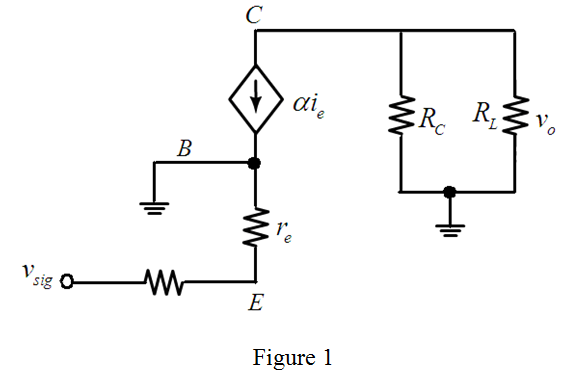

Find the amplitude of output voltage, .
Substitute 1 for current gain,  ,
,  for , 25 mV for
for , 25 mV for  , 0.25 mA for
, 0.25 mA for  , and 10 mV for .
, and 10 mV for .
Thus, the output voltage, is, .
Consider the following circuit diagram for a common-base amplifier:

The output voltage in the circuit is,
Simplify the expression for the emitter current.
Consider the expression for the base-emitter voltage.
Substitute the expression for the emitter current.
Simplify the expression for the output voltage.
Find the amplitude of output voltage, .
Substitute 1 for current gain, , for , 25 mV for , 0.25 mA for , and 10 mV for .
Thus, the output voltage, is, .
Find the overall voltage gain,  .
.

Substitute 1 for  ,
,  for , 25 mV for
for , 25 mV for  , 0.25 mA for
, 0.25 mA for  , and
, and  for signal input resistance,
for signal input resistance,  .
.
Thus, the overall voltage gain, is, .
Substitute 0.5 V for and 0.45 V/V for  .
.
Thus, the signal amplitude, is, .